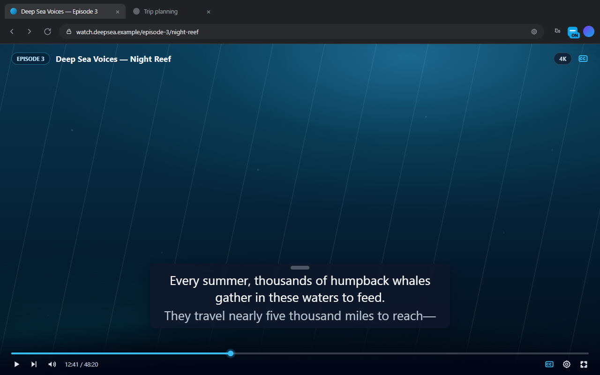
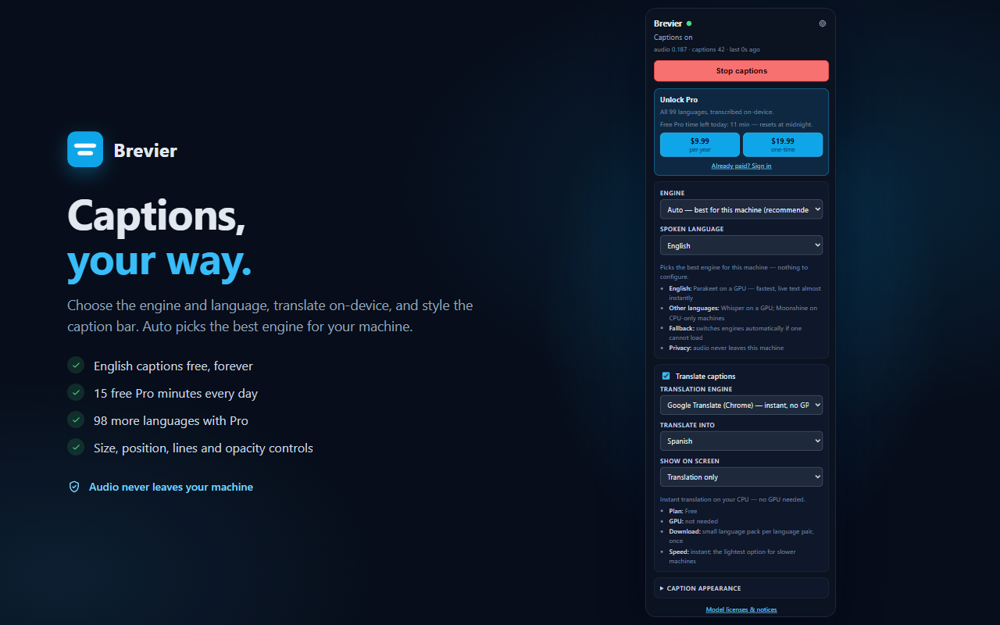
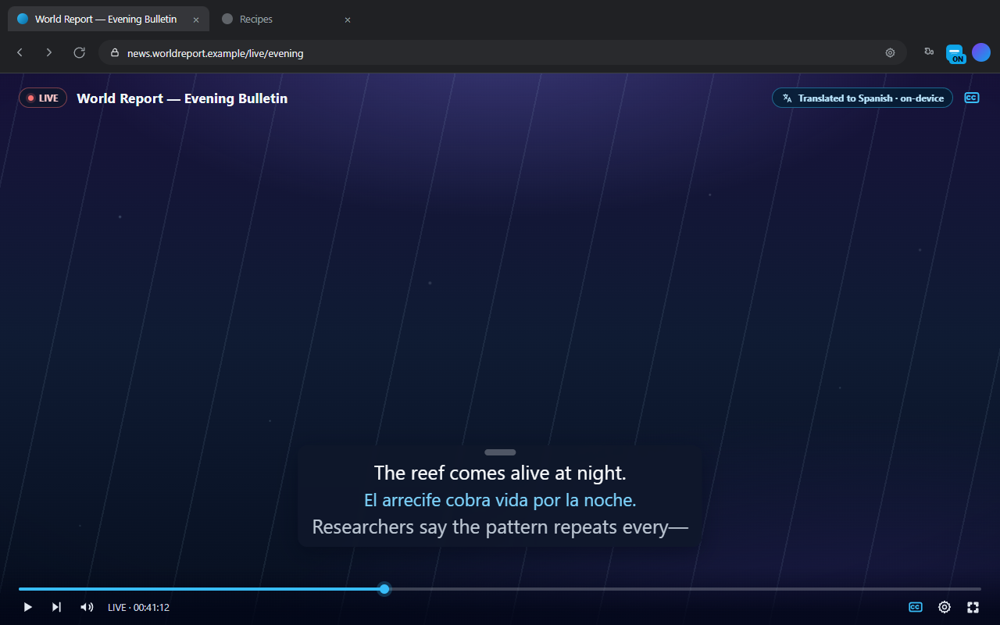

Private by design
Audio is captured only from the chosen tab, processed in memory, and discarded. No uploads, no recordings, no tracking, no account.
Chrome extension · Runs on your device
Brevier adds real-time captions to whatever you are watching or listening to — calls, streams, lectures, podcasts — and runs entirely on your machine. Your audio is never uploaded, recorded, or sent to a server.
Free forever for English · No account required · Desktop Chrome 116+

Captions in three steps — no accounts, no setup, no uploads.
Add the extension from the Chrome Web Store — or install the developer preview if you want to test builds.
Open the tab you want to caption and press Start in the Brevier popup.
A caption bar appears over the page. Drag it anywhere, resize the text, and read in real time.
Choose the engine and language, translate on-device, and style the caption bar to match what you are watching.
Audio is captured only from the chosen tab, processed in memory, and discarded. No uploads, no recordings, no tracking, no account.
Parakeet, Moonshine, and Whisper all run inside Chrome with WebAssembly and WebGPU. Auto picks the best engine for your machine and switches if one cannot load.
Any site that plays audio, including fullscreen video players. The overlay is click-through except for its grip, so buttons and links stay usable.
Translate captions as they appear with Chrome's built-in translator. Show the original, the translation, or both, side by side.
Position, font size, number of lines, background opacity, and interim text are all adjustable from the popup or the caption bar itself.
Models download once (roughly 44 MB to 1.5 GB) and are cached for offline use. After that, captions need no network at all.


Read along in another language without sending a single word anywhere. Chrome's built-in translator runs on your CPU — no GPU required — and Brevier can show the original, the translation, or both.
Auto picks the right engine for your machine and falls back automatically if one cannot load. Everything runs inside Chrome — models are downloaded once and cached for offline use.
Fastest English. Live text in tens of milliseconds, with the final line the moment a sentence ends.
Runs on your CPU and uses the GPU when there is one. English, Spanish, Arabic, Japanese, Mandarin Chinese, and Vietnamese. 44–305 MB models.
Most accurate. Whisper large-v3-turbo's full language table, from Afrikaans to Yoruba, in one ≈1.5 GB download.
Everything runs on your device either way. Pro unlocks the rest of the language table and the higher-quality on-device translator — and every Pro purchase funds Brevier's development.
$0 forever
No account required
$9.99 per year
Or $19.99 once — both unlock everything
Buying Pro supports Brevier's development — it funds the on-device engines and keeps the project independent.
Prices in USD. Checkout is handled by ExtensionPay; your Pro license unlocks in the browser.
No. Audio is captured only from the tab you start captions on, processed in memory by the on-device speech engine, and discarded. Nothing is recorded or transmitted.
Desktop Chrome 116 or newer. Chrome's built-in translator (for caption translation) needs Chrome 138 or newer. A GPU with WebGPU is recommended for Parakeet and Whisper; Moonshine runs on CPU-only machines.
Open the Brevier listing on the Chrome Web Store and click Add to Chrome — the store build updates automatically. If you prefer testing builds, the developer preview is still available: download the zip, extract it, and load it from chrome://extensions in Developer mode. Preview builds do not update automatically and cannot complete Pro purchases.
After the first model download, yes. Models are cached locally and reused — roughly 44 MB to 1.5 GB depending on the engine and model.
English captions are free on every engine. Pro unlocks the other 98 transcription languages on the Moonshine and Whisper engines. Caption translation with Chrome's built-in translator is free.
Yes. The caption bar stays above fullscreen players, and it is click-through except for its drag handle, so it never blocks buttons or links.
No. Chrome does not allow extensions to capture chrome:// pages, the Chrome Web Store, or other extension pages. Any normal website that plays audio works.
English captions and Chrome translation are free forever, with no account. You also get 15 free Pro minutes every day, resetting at midnight, to try any language.
In the Brevier popup: $9.99 per year or a $19.99 one-time purchase — both unlock everything. Checkout is handled by ExtensionPay from the popup; your license is stored in your browser.
Buying Pro is the main way — every purchase, yearly or one-time, directly funds development of the on-device engines and keeps Brevier independent. Reporting bugs and sharing Brevier with someone who needs captions helps just as much.